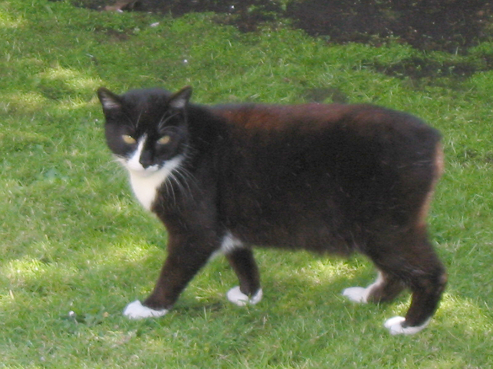

Kucing manx atau biasa disebut Rumpy adalah salah satu ras kucing yang tidak memiliki ekor, atau kalaupun ada ekornya akan berukuran sangat pendek. Kucing ini berasal dari pulau kecil di Britania Raya yang bernama Isle of Man. Manx merupakan salah satu ras kucing tertua yang pernah terdaftar di CFA (Cat Fanciers Association) pada tahun 1908. Berbeda dengan sifat kucing pada umumnya, manx sangat menyukai air, mereka suka memasukkan tangannya ke dalam air atau tempat minum. Kucing ini tergolong mahal, harganya dapat mencapai 10-40 juta. Namun karena faktor keunikan dan sejarahnya, manx tetap banyak diburu oleh para kolektor kucing di seluruh dunia.